Manual de uso
Área da nutri: passo a passo.
Como usar a sua agenda, os recados do site, os lembretes, os retornos e a Flora, a sua assistente.
Versão 1 · outubro de 2026Antes de começar
A Área da nutri é o seu espaço de trabalho dentro do site. Nela você vê as consultas do dia, organiza a agenda, recebe os pedidos que chegam pelo formulário do site, cria lembretes e conversa com a Flora, uma assistente que ajuda a marcar, confirmar e não esquecer nenhum retorno.
Como abrir
- Abra o seu site e role até o fim da página.
- No rodapé, toque em Área da nutri.
- Pronto: a área abre na aba Hoje.
Você também pode abrir direto pelo endereço do site seguido de /painel.html.
Nesta primeira versão, as informações ficam salvas no próprio navegador onde você usa a área. Por isso, use sempre o mesmo navegador e o mesmo aparelho e faça backup com frequência (veja o capítulo 10).
Na versão final, você vai entrar com e-mail e senha, e tudo fica guardado com segurança, acessível do computador e do celular.
Conhecendo a tela
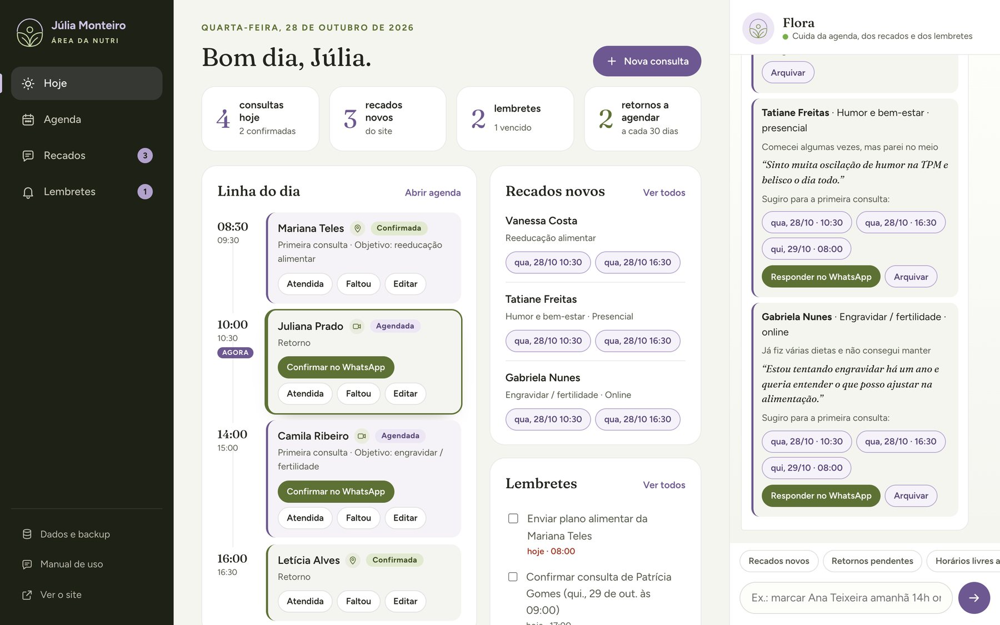
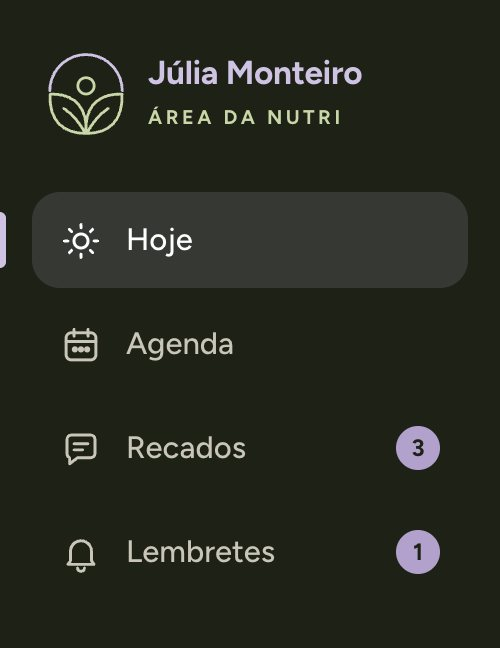
O menu
- Hoje: o resumo do seu dia.
- Agenda: a semana e o mês, com todas as consultas.
- Recados: os pedidos que chegaram pelo site.
- Lembretes: tudo o que você não pode esquecer.
- Dados e backup: salvar e restaurar as suas informações.
- Ver o site: volta para o seu site.
Os números em lilás ao lado de Recados e Lembretes mostram quantos recados novos chegaram e quantos lembretes já venceram.
Hoje: o resumo do seu dia
É a primeira tela que aparece. No topo, quatro números:
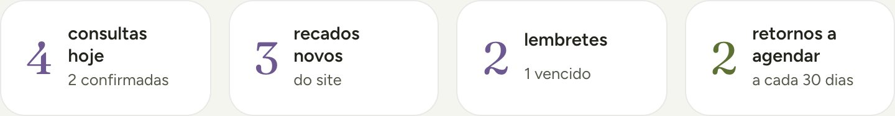
- Consultas hoje e quantas já estão confirmadas.
- Recados novos que chegaram pelo site.
- Lembretes abertos e quantos já venceram.
- Retornos a agendar: pacientes atendidas que ainda não têm a próxima consulta.
Toque em qualquer um deles para ir direto ao assunto.
Linha do dia
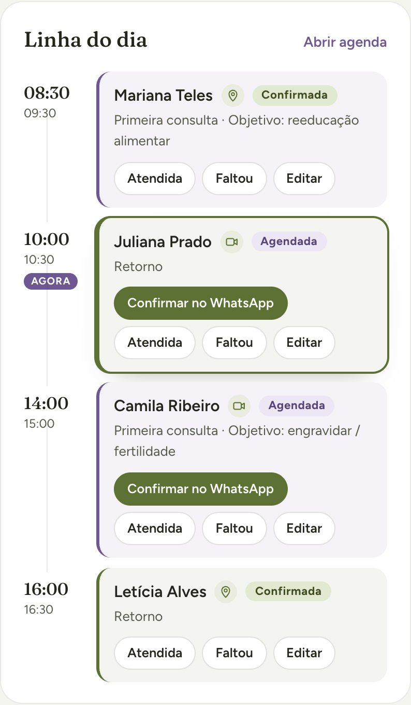
As consultas de hoje, em ordem de horário, com o início e o fim de cada uma.
- Ameixa: primeira consulta.
- Oliva: retorno.
- Câmera: consulta online. Alfinete: presencial.
- AGORA: marca a consulta atual ou a próxima.
Em cada consulta você tem os botões:
- Confirmar no WhatsApp: abre a conversa com a mensagem de confirmação pronta.
- Atendida: registra que a consulta aconteceu e a Flora já oferece marcar o retorno.
- Faltou: registra a falta e a Flora oferece uma mensagem para remarcar.
- Editar: muda horário, tipo, modalidade ou observações.
Recados novos e lembretes
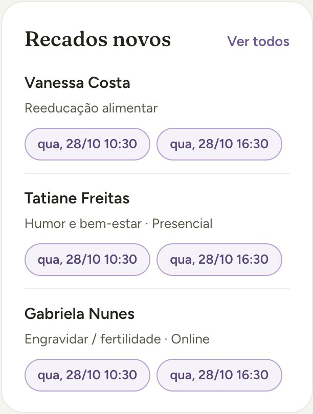
Ao lado da linha do dia aparecem os recados novos, cada um com dois horários livres sugeridos. Tocar num horário já marca a primeira consulta daquela paciente, cria o lembrete de confirmação e tira o recado da lista de novos.
Logo abaixo ficam os lembretes de hoje e os atrasados. Marque a caixinha quando terminar.
Agenda e consultas
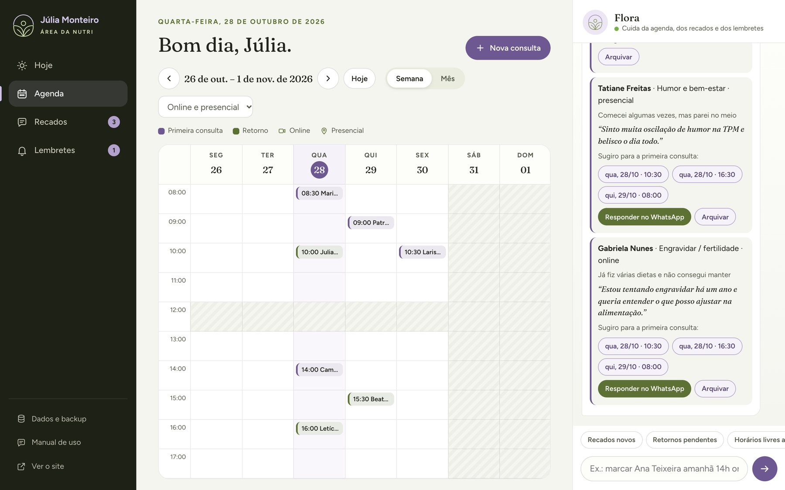
- Semana / Mês: troca a visualização.
- Setas ‹ ›: semana (ou mês) anterior e seguinte. Hoje volta para a data atual.
- Online e presencial: filtra só um tipo de atendimento.
- Toque num horário vazio para marcar uma consulta naquele horário.
- Toque numa consulta para ver ou editar.
- Abaixo da agenda aparece a lista do dia selecionado, com os botões Confirmar no WhatsApp, Confirmada, Atendida, Editar e Excluir.
Marcar uma consulta
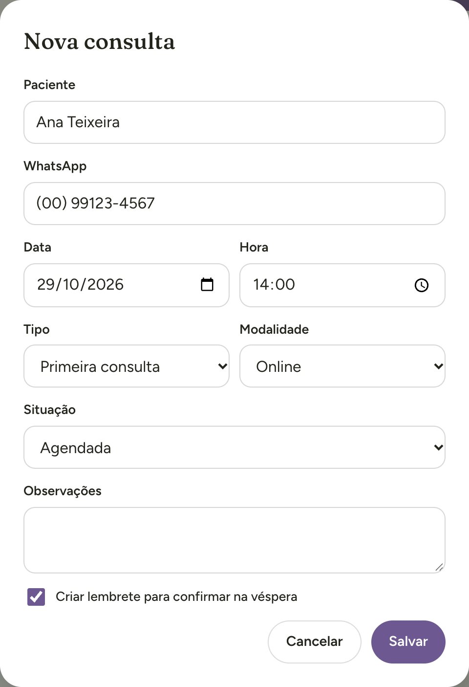
- Toque em + Nova consulta (no topo da tela) ou num horário vazio da agenda.
- Preencha o nome da paciente e o WhatsApp com DDD.
- Escolha a data e a hora.
- Escolha o tipo: primeira consulta ou retorno.
- Escolha a modalidade: online, presencial ou a combinar.
- Deixe marcado “Criar lembrete para confirmar na véspera”.
- Toque em Salvar.
Se o horário bater com outra consulta, a área avisa e mostra os horários livres daquele dia. A duração conta: na configuração atual, a primeira consulta tem 60 minutos e o retorno, 30.
Situações de uma consulta
| Situação | Quando usar |
|---|---|
| Agendada | A consulta foi marcada, mas a paciente ainda não confirmou. |
| Confirmada | A paciente confirmou que vem. |
| Realizada | A consulta aconteceu (botão Atendida). |
| Faltou | A paciente não veio. |
| Cancelada | A consulta foi desmarcada. O horário volta a ficar livre. |
Recados do site
Toda vez que alguém preenche o formulário “Agende sua consulta” no site, a mensagem vai para o seu WhatsApp (ou para o Direct do Instagram) e vira um recado aqui, com tudo o que ela respondeu.
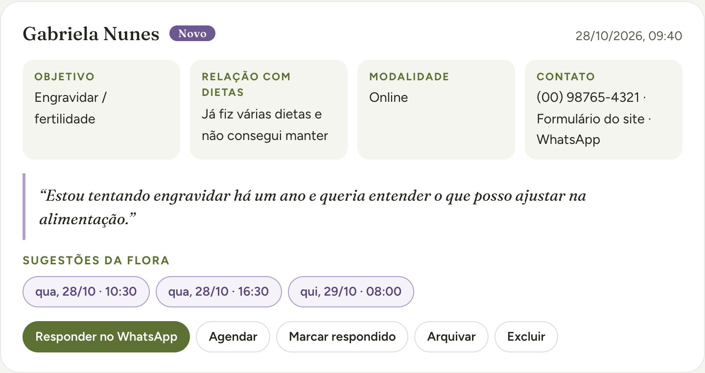
- Objetivo: o que ela procura (ex.: engravidar, reeducação alimentar).
- Relação com dietas: se já tentou antes e como foi.
- Modalidade: se prefere online ou presencial.
- Contato: o WhatsApp, se ela informou, e por onde a mensagem chegou. Sem WhatsApp, a mensagem dela foi pelo Direct do Instagram: responda por lá.
- A história dela, entre aspas, quando ela escreve.
O jeito mais rápido de responder
- Leia o recado.
- Toque num dos horários sugeridos pela Flora: a consulta é marcada, o lembrete de confirmação é criado e o recado passa para Agendados.
- Toque em Responder no WhatsApp: a conversa abre com uma mensagem pronta oferecendo o horário. Confira e envie.
Prefere combinar antes? Use Responder no WhatsApp primeiro e depois Agendar, que abre o formulário de consulta já preenchido.
Os botões Marcar respondido, Arquivar e Excluir organizam a lista. No topo, os filtros mostram Novos, Respondidos, Agendados, Arquivados ou Todos.
Lembretes
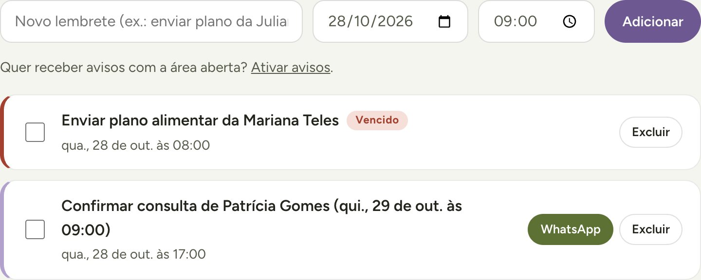
Criar um lembrete
- Na aba Lembretes, escreva o que precisa lembrar (ex.: enviar o plano da Juliana).
- Escolha a data e a hora.
- Toque em Adicionar.
Também dá para pedir para a Flora: lembrar de enviar o plano da Juliana amanhã 9h.
Lembretes automáticos
- Confirmar na véspera: criado sozinho quando você marca uma consulta.
- Agendar retorno: criado quando você pede para a Flora lembrar depois (capítulo 7).
Quando chega a hora, aparece um aviso na tela e o lembrete fica com a etiqueta vencido até você marcar a caixinha. Para receber o aviso também do navegador, toque em Ativar avisos e permita.
Os avisos só aparecem com a área aberta no navegador.
Retornos
O retorno nutricional é parte do processo, e a área foi pensada para nenhuma paciente ficar sem ele.
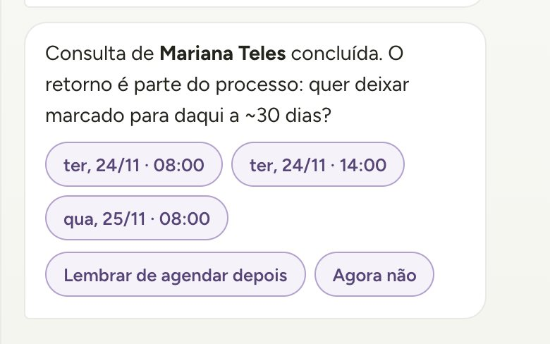
- No fim da consulta, toque em Atendida (na linha do dia ou na agenda).
- A Flora sugere horários de retorno perto de 30 dias depois, no mesmo formato (online ou presencial).
- Toque num horário: o retorno é marcado e o lembrete de confirmação é criado.
- Toque em Avisar no WhatsApp para mandar a data para a paciente.
Ainda não sabe a data? Toque em Lembrar de agendar depois: a Flora cria um lembrete uma semana antes do prazo.
Retornos pendentes
O cartão Retornos a agendar (na aba Hoje) e o pedido retornos pendentes para a Flora mostram quem foi atendida há 23 dias ou mais (uma semana antes do prazo de 30) e ainda não tem a próxima consulta, com horários sugeridos e um convite pronto para o WhatsApp.
O prazo de 30 dias pode ser mudado na configuração.
Flora, a sua assistente
A Flora fica à direita da tela (no celular, no botão redondo). É só escrever na caixa de baixo do mesmo jeito que você mandaria uma mensagem, e tocar na seta.
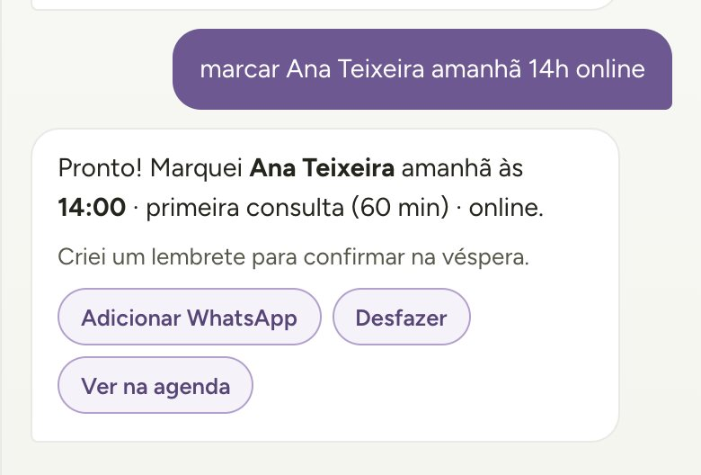
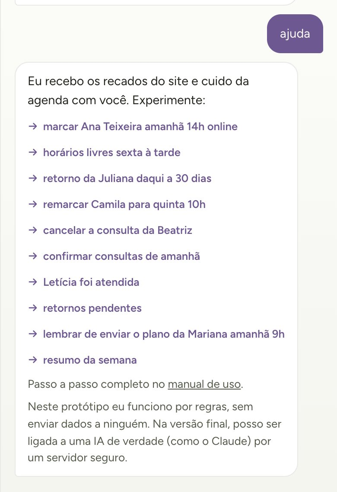
Quando há algo para mandar à paciente, ela abre o WhatsApp com o texto pronto. Você confere, ajusta se quiser e envia.
Nesta versão, ela funciona por regras, direto no seu navegador, sem enviar dados a ninguém. Na versão final, pode ser ligada a uma inteligência artificial para entender pedidos ainda mais livres.
O que pedir, e como escrever
| Você quer | Escreva, por exemplo |
|---|---|
| Ver o dia ou a semana | resumo de hoje · como está amanhã? · resumo da semana |
| Ver horários livres | horários livres sexta à tarde · horários livres amanhã retorno |
| Marcar uma consulta | marcar Ana Teixeira amanhã 14h online |
| Marcar um retorno | retorno da Juliana daqui a 30 dias |
| Remarcar ou cancelar | remarcar Camila para quinta 10h · cancelar a consulta da Beatriz |
| Confirmar | confirmar consultas de amanhã · confirmar Juliana |
| Registrar a consulta | Letícia foi atendida · Renata faltou |
| Ver quem precisa de retorno | retornos pendentes |
| Ver os recados ou conflitos | recados novos · conflitos na agenda |
| Criar um lembrete | lembrar de enviar o plano da Mariana amanhã 9h |
Palavras que ela entende
- Dias: hoje, amanhã, depois de amanhã, segunda a domingo, “sexta que vem”, 25/11, dia 25, daqui a 30 dias.
- Horas: 14h, 14:30, às 9, 3 da tarde.
- Tipo: retorno ou primeira consulta. Se você não disser, ela escolhe sozinha: quem já foi atendida vira retorno.
- Modalidade: online ou presencial.
Boas práticas
- Faltou alguma informação? Ela pergunta e mostra opções para tocar. Os botões dentro dos balões funcionam: horários, Desfazer, Ver na agenda, WhatsApp.
- Errou? Toque em Desfazer no balão da resposta.
- Quer desistir no meio de uma pergunta? Escreva
cancelar. - Duas pacientes com o mesmo nome? Use nome e sobrenome; se houver dúvida, ela mostra as opções.
- Atalhos: os botões logo acima da caixa de texto fazem os pedidos mais comuns com um toque.
No celular
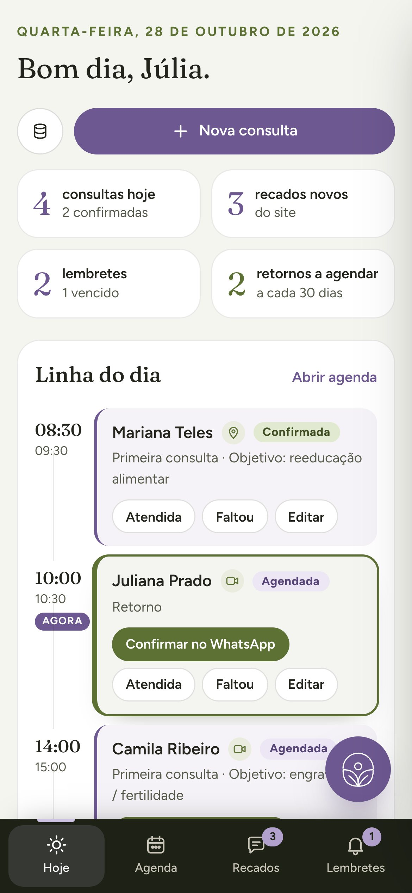
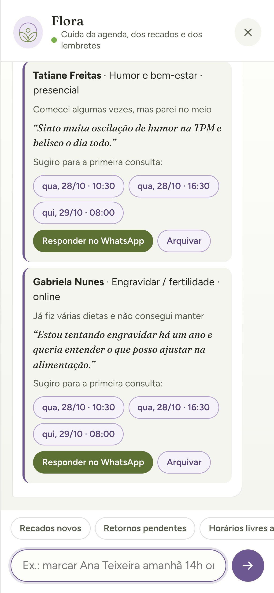
- Abas embaixo: Hoje, Agenda, Recados e Lembretes.
- Botão redondo lilás: abre a Flora de qualquer tela.
- Ícone de banco de dados (ao lado de Nova consulta): Dados e backup.
- A agenda da semana pode ser arrastada para os lados.
Dados e backup
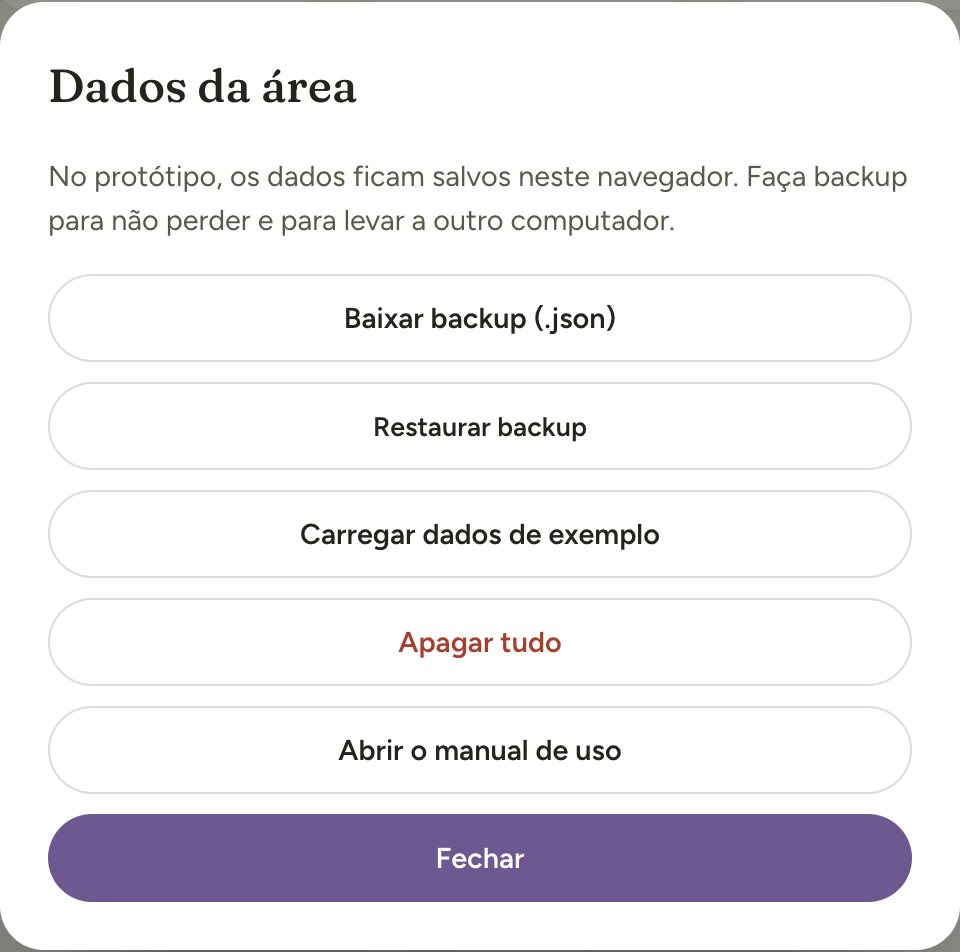
Em Dados e backup (no menu) você encontra:
- Baixar backup (.json): salva um arquivo com todas as consultas, recados e lembretes. Guarde no seu Google Drive ou no e-mail.
- Restaurar backup: carrega um arquivo salvo antes. Substitui o que está na área.
- Carregar dados de exemplo: pacientes fictícias, só para treinar.
- Apagar tudo: limpa a área deste navegador.
Problemas comuns
| O que aconteceu | O que fazer |
|---|---|
| Um pedido feito no site não apareceu nos Recados. | Nesta versão, o recado só aparece se o formulário foi enviado no mesmo navegador da área. A mensagem da paciente sempre chega no seu WhatsApp (ou Direct): responda por lá. Na versão final, os recados chegam de qualquer aparelho. |
| O horário que eu quero aparece como ocupado. | A duração conta: uma primeira consulta às 13h30 ocupa até 14h30. Escolha outro horário ou mude o tipo para retorno, se for o caso. |
| A Flora não entendeu o pedido. | Escreva o nome, o dia e a hora, como em “marcar Ana Teixeira sexta 10h”. Ou escreva ajuda e toque num exemplo. |
| Marquei ou apaguei algo sem querer. | Toque em Desfazer no balão da Flora. Se já passou, edite a consulta ou restaure o último backup. |
| Troquei de computador e a agenda sumiu. | Nesta versão, os dados ficam no navegador antigo. Baixe o backup nele e use Restaurar backup no novo. |
| O aviso do lembrete não apareceu. | A área precisa estar aberta. Para avisos do navegador, toque em Ativar avisos na aba Lembretes. |
| O botão do WhatsApp não aparece. | A consulta ou o recado está sem número. Toque em Editar e preencha o WhatsApp com DDD. |
Cuidados com os dados das pacientes
Nomes, telefones e histórias das pacientes são dados de saúde e merecem cuidado (Lei Geral de Proteção de Dados, LGPD).
- Não deixe a área aberta em computadores compartilhados ou de uso público.
- Guarde os backups em local protegido por senha, como o seu Google Drive.
- Escreva nas observações só o necessário para organizar o atendimento. O prontuário continua no seu sistema de costume.
- Na versão final, a área terá login com senha e os dados ficarão num banco de dados protegido.